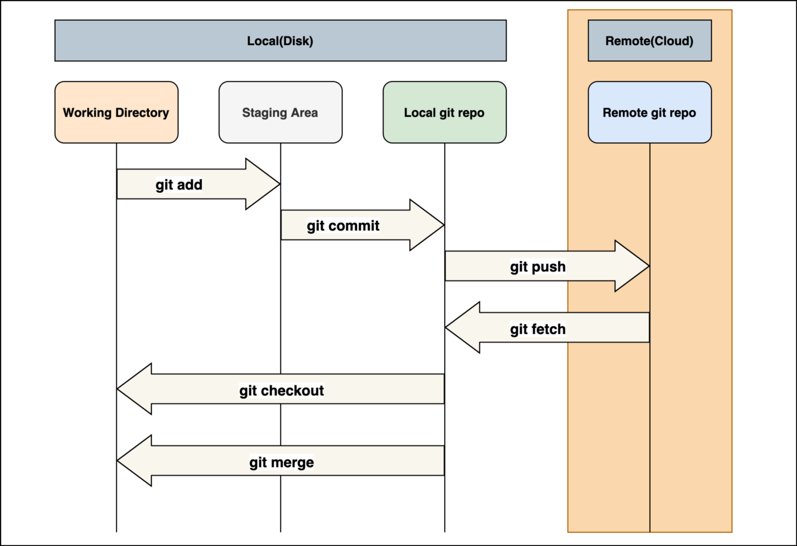

Git Chops
-> Create / Initialize
-> Merging Branching
git merge dev --allow-unrelated-histories
git checkout -b $newbranch # get a new branch and switch to it
git checkout -b $branchname_a/$branchname_b # get a local copy of a remote existing branch
git checkout $branchname # switch branch
git checkout --orphan $branchname # create branch without full history

-> local push to existing remote
touch README.md
git init
git add .
git commit -m "message"
git remote add origin https://github.com/user/nameofgit.git
git pull origin master -v --allow-unrelated-histories
// or
git pull <remote> master:dev
git push -u origin master
-> summary of changes
git log -n $num -p # $num:int recent commit diffs
git log __branchA__ ^__branchB__ # commit diff btw branch A and B
git log --pretty=oneline --stat --all __foldername__ # modified files under a given folder
git fetch
git pull origin __branchname__
git merge --no-ff __sourcebranch__ # merge into current branch source one without rebase/FF
git push origin __destinationbranch__ # push merges/changesets to a branch
# display the path of the repository
git remote show origin
# Change remote URI to xxx
git remote set-url origin xxx
-> undo changes
git status # show status of uncommited files
# revert a file
git checkout __file__
# Checkout all changes to **file** from branch **branchname** into current
git checkout __branchname__ __file__
# revert a full branch to specified revision if not commited
git checkout __revision__ .
# Reverts certain commits if commited
git revert __commit1__ __commit2__ ...
# revert a full branch to specified revision if commited
git reset __revision__ .
# remove all local uncommited modifications
git clean -f
# display local branches, active one is with a \*
git branch
# Show changes in files
git diff
# show a diff between a local branch and a remote one
git diff __branch__ origin/__remotebranch__
# rebases current branch with specified branch (fetches remote branch changes and then adds yurs at the tip)
git rebase __branchname__
# delete a file from branch and filesystem
git rm __filename__
# delete a local branch
git branch -d __branchname__
# delete a remote brach
git push origin --delete __branchname__
# show visual git log
gitk __filename__
-> set config vars
# reset to last commit (even if pushed). Can re-commit stuff but if already pushed will need t push with `--force`.
git reset --soft HEAD~1
# squash all branch pushed commits previous to the one specified into a single commit with the dsired new message.
git reset --soft <new-root-sha1> && git commit --amend -m "<new message>" && git push --force
# Show diff between local commits and remote commits
git log origin/__branchname__..__branchname__
# List currently setup config values
git config --list
# Setup global user name
git config --global user.name "Kartones"
# Setup global user email
git config --global user.email "d...@....net"
# Make git cache credentials for 8 hours
git config --global credential.helper 'cache --timeout=28800'
# Activate colors in diffs, etc.
git config --global color.ui true
# Fix Convert newlines to Unix-style ones (**Windows**)
git config --global core.autocrlf true
# Fix Convert newlines to Unix-style ones (**Unix**)\*
git config --global core.autocrlf input
# Better diff highlighting (same for 3 following options)
git config --global pager.log 'diff-highlight | less'
git config --global pager.show 'diff-highlight | less'
git config --global pager.diff 'diff-highlight | less'
git config --global interactive.diffFilter diff-highlight
# Init and update all submodules
git submodule update --init --recursive
# Retrieve and update all submodules (alt)
git submodule init && git submodule update
rm -Rf **submoduledir**
git reset && git checkout .
git checkout __branchname__
//help.github.com/articles/merging-a-pull-request)
git pull https://github.com/__username__/__reponame__.git __branchname__: [Merge a pull request to local branch](https
//git-scm.com/book/en/Git-Tools-Stashing) current changes
git stash: [Stash](http
# Unstash and merge stored changes
git stash apply
# Keep changes from incoming branch or local one, respectively.
git checkout --theirs xxxx
git checkout --ours xxxx
# Blames original commit, not the move commit
git blame -M
# Looks at all commits in history
git blame -CCC
# merges and commits a specific commit to current branch
git cherry-pick __commit__
# show all changes on all branches and revert to a specific one
git reflog
git reset HEAD@__commit__
# Squash a change on previous commit and change the commit message
git commit --amend
# Show both staged and unstaged changes that you will commit
git diff --staged
# Undo a commit removing it from history
git reset --hard HEAD~1
git push origin <branch> --force
# Tag any commit of a repo (e.g. with a certain version):
git tag <label> <commit-id>
git push origin <label>
-> Resources
tig: to navigate commits & branches
Most Common Git tips & tricks (awesome list)